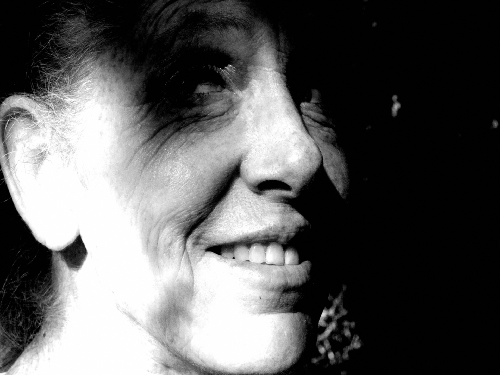

The whole thing is a house of cards that depends on somebody else keeping his promises. (Photo by author.)
You don't know me, but you might.
Call me Alice or Shauna or Lacee, Mandy or Kaitlyn. I'm from Wewoka, Watonga, Waurika—wherever.
I'm around the corner, down the block, and across town.
I graduated high school, or maybe I didn't.
I made the coffee at Stripes this morning.
I gave grandpa his bath at the nursing home yesterday.
I'm a young woman who's not so young anymore, who's feeling like she's missed something, something that can't be brought back no matter what.
Odds are you know someone like me. There's half a chance you might be someone like me. These shoes fit all over the place.
This isn't just my story. This is our story. I'm telling it because it makes more sense when I do, and because reading it may help you realize things and make decisions that won't break your heart later, or let others break it for you so easily.
When Ashley and Aaron came along, my life changed completely. That's kind of obvious. Having kids has a way of doing that. It means you can't go back, not that you would want to. There wasn't anything to go back to.
Lets face it—you get into a relationship, you have children in order not to be, not to feel, all the things you were and felt. Yes, it was an escape, a solution, but it was better than any other.
Guys, bars, hanging out, getting wasted—none of that works. You end up hating everything about yourself as you go back for more, night after night.
My life was a blur where nothing really mattered except doing whatever it took to keep it going. I was pretty. I was popular. Pole dancing made sure of that.
With Jello shots, shame flies out the window faster than puke down the toilet.
Don't act shocked. You do it too, even if you've never set foot on a stage. You know how guys look at you. And you know what you have to do to get a second date. With Jello shots, shame flies out the window faster than puke down the toilet. That's what I left behind. That's what I ran away from.
With a husband and kids I felt hopeful. I became something I had never been before, a wife, a mom, a new me. It was a happy me, a me I had never met, a me I never knew existed. I wasn't lonely. I wasn't empty inside and frantic about it all the time.
It's dangerous to find your happiness—your identity even—in others. The whole thing is a house of cards that depends on somebody else keeping his promises. It can all fall down right before your eyes. It can all be taken away.
Michael cheated. He had the job, so he had the lawyer. That's a scam right there. There is no justice that isn't paid for. You want to fix a lot of problems in Oklahoma? Make sure both sides in a divorce are equally represented.
A decade and a half later, I can see every moment of their childhoods, every milestone, like some kind of YouTube video that endlessly repeats.
He got the blonde he wanted.
I got visitation.
He had a house and a truck and a job.
I couldn't make ends meet. I didn't have the resources to compete.
I got married again. Alone and I don't get along very well, never have. I have to have somebody—it's not about having a place to stay; it's about a reason to live, a way to keep my head from going places that it shouldn't.
Someone else was raising my kids, and there was nothing I could do about it. The kids would visit, but I felt the distance increasing.
There is nothing sadder than watching your kids go home after a visit to someplace that isn't yours. Everything that was becomes frozen, and everything that is is out of your reach.
The visits wouldn't go as planned. Sometimes they wouldn't happen at all. There were always reasons, always excuses. Nothing I could do anything about.
The strangest things started happening. Promises would be made but never kept. Once in a while might be an accident or misunderstanding, but there was a pattern. Cruel is the only way to describe it when someone invites you to something, something special, something meaningful, once-in-a-lifetime even, and then blocks you on Facebook the next day.
I never got used to it. I still don't think it was the kids. It was my ex and his wife.
After a while my second marriage ended. That was on both of us.
We met outside a liquor store.
We were both happy at first. We both wanted a second chance, and we both felt that we had found it.
I tried to make it work until I didn't. Then it didn't. He got tired of it too, my problems, my games, my mistakes. What else could anyone expect?
Along came the man of my dreams. I thought he was anyway. Elated. Ecstatic. Like the first time.
I carried baggage into our life, but he didn't seem to care. He loved me for it, in spite of it—he just loved me. It sure felt that way. I enjoyed my time with him. I remember the good and the sad.
Then he turned into a monster, toying with me, playing games with my life, not caring about anyone but himself. Ask me about the name tattooed across my back sometime. I always swore branding wasn't something I would ever do, but there I went.
I hung on for dear life needing him.
Rejection. Abandonment.
In the end I felt smaller than I'd felt in years. Like at the very beginning.
I thought those days were over, finally over once and for all, but it turned out they're right around the next corner. Right there waiting. The kind of feelings which you'll do anything to avoid. Anything.
It's been five years since I did the kind of thing I do when I get desperate. It's been ages since I hurt myself trying to feel something other than pain.
I'm not sure what changed. I don't know how to describe it.
I grew up, finally. It sounds simple, but it was anything but.
I learned to rely on myself more. I don't doubt myself so easily and so often.
I don't automatically assume that I can't manage or accomplish things worthwhile.
I look for support in healthy ways, not people to cling to who take advantage. I learn from mistakes, choosing to do the opposite of what I've always done, even if it's hard, instead of the same thing that seemed so easy.
Oh yeah, I'm married again. His name's Michael too. What a coincidence. LOL.
You might think all I have to talk about is disappointment and regret, bitterness and desperation, but it isn't. That's all there of course, but there's more.
I struggle everyday, but I'm still here. I stand in front of a mirror and like what I see for once. I stand up for myself and stand up to others like I never could.
Twenty years ago everything was all about the moment. The past was miserable. The future was unthinkable, something I wanted to avoid or destroy.
Today I put the past into perspective—it doesn't own me unless I let it. I see there is more to life than just the moment. The future is something I embrace.
Here I am.
These are my stories.
I stand in front of the mirror and like what I see. (Photo by author.)